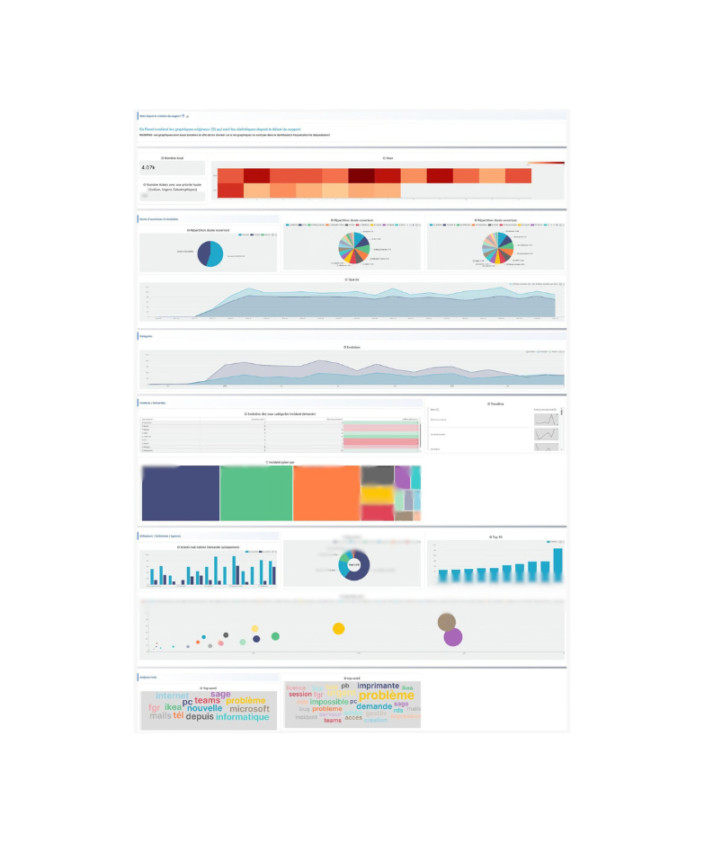
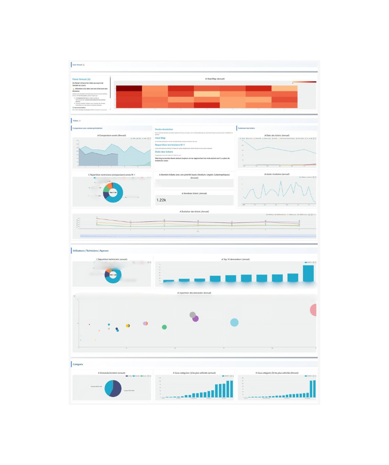
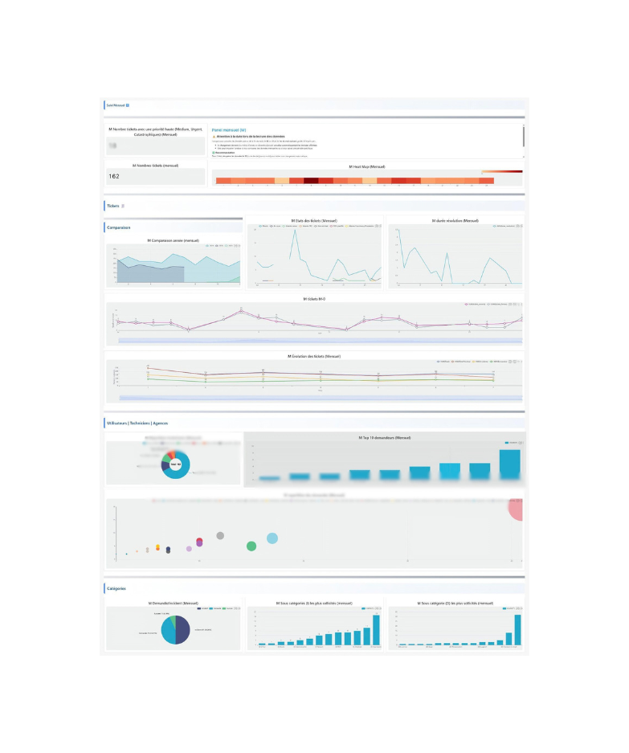
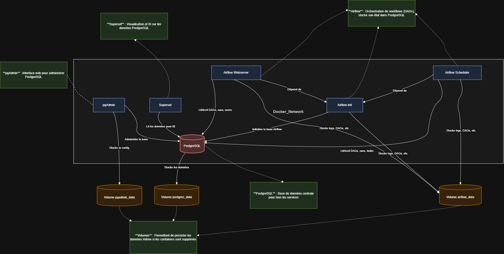
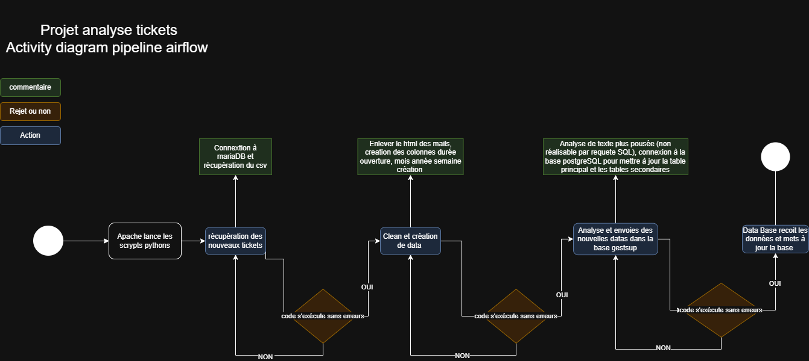

Dashboard Temps Réel — Stage (2 mois) Mobilité Services
Création d'un dashboard en temps réel avec Apache Superset, orchestré par Airflow et alimenté par PostgreSQL pour le suivi des indicateurs de performance du support IT.
Technologies
Objectifs
- Automatiser les pipelines de données avec Airflow
- Créer des dashboards partagés avec Superset
- Assurer la mise à jour en temps réel des données
- Centraliser les KPI de Mobilité Services
Architecture
- ETL automatisé avec Apache Airflow
- Stockage des données dans PostgreSQL
- Visualisation interactive avec Superset
- Déploiement conteneurisé avec Docker
📊 Aperçu des Dashboards
Les graphiques ont été construits à partir des rapports existants de Mobilité Services et des exports de leur outil de ticketing GestSup. J'ai aussi rajouté quelques visualisations en plus que je trouvais intéressantes et qui n'existaient pas encore, comme la heatmap d'activité, les incidents critiques par catégorie ou la répartition des demandeurs par agence.
🔒 Après en avoir discuté avec mon tuteur de stage, certaines données ne doivent pas être partagées publiquement, d'où le floutage.

Vue Globale — Pilotage All Time
Tableau de bord complet pour la direction : volume total de tickets depuis le début,
heatmap d'activité, répartition des types d'incidents/demandes,
évolution temporelle et analyse des mots-clés les plus fréquents.

Suivi Annuel & Comparatif N-1
Analyse annuelle avec comparaison à l'année précédente, heatmap mensuelle,
évolution des tickets, durée de résolution et répartition des demandeurs par agence.

Suivi Mensuel & Drill-down
Vue mensuelle détaillée avec comparaison mois par mois, état des tickets en cours,
top des demandeurs, répartition des catégories et alertes sur les délais de résolution.
🔒 Code source & Confidentialité
Ce projet a été réalisé dans un contexte professionnel pour Mobilité Services. Le code source et les données brutes sont la propriété de l'entreprise et ne sont pas publics.
Je peux néanmoins présenter l'architecture détaillée et des extraits de code anonymisés lors d'un entretien technique.
💡 Retours d'expérience & Compétences acquises
Ce stage de 2 mois a été une immersion complète dans le monde de l'entreprise. Au-delà de la technique, j'ai appris à gérer les attentes des parties prenantes, respecter des deadlines strictes et vulgariser mes travaux lors de présentations hebdomadaires.
Défis techniques majeurs :
- Nettoyage de Données : Les données sources contenaient de nombreuses balises HTML et du bruit. J'ai dû développer des scripts de parsing robustes et des filtres par mots-clés pour extraire l'information utile avant l'ingestion.
- Infrastructure : Configurer Superset derrière un reverse proxy Nginx sur un sous-domaine spécifique (et non à la racine) a été un casse-tête inattendu nécessitant plusieurs jours de debugging réseau et configuration.
- Connexions Distantes : Établir et sécuriser la connexion entre mon environnement Docker et le serveur de base de données de production distant.
- Robustesse : Concevoir le système pour qu'il soit résilient (redémarrage automatique des conteneurs après un crash, gestion des erreurs de connexion).
Impact : Le projet est toujours en production et utilisé quotidiennement, plus de 8 mois après mon départ. Le DSI m'envoie encore occasionnellement des mises à jour sur son utilisation, ce qui témoigne de la pérennité de la solution mise en place.
🏗️ Architecture & Schémas Techniques

Architecture Réseau & Conteneurisation (Docker)
Topologie du déploiement Docker. Met en évidence l'isolation des services (Superset, Redis,
PostgreSQL)
au sein de réseaux virtuels dédiés et l'exposition via Nginx acting comme reverse proxy.

Diagramme d'Activité (Pipeline ETL Airflow)
Séquencement des tâches DAG sous Airflow : extraction périodique des données, scripts de
transformation et de nettoyage en Python,
gestion des dépendances et alertes en cas d'échec d'ingestion.
Résultats
- Solutions toujours en production après 8 mois.
- Réduction du temps de reporting (automatisé vs manuel).
- Autonomie complète des équipes sur l'accès aux chiffres.